Choose an endangered animal from your hometown and use discarded plastic to construct its form. Your model must have at least one movable and interactive part. The objective of this project is to learn how to mold and join existing forms into a form of your own choice, and also to raise awareness about endangered species and environmentalism.
Process
1—research
Since I live in the bay area, I started by researching endangered animals in the bay area. Even though most of the animals I research were all from my area, I hadn't ever seen most of them before. I wanted to pick an animal I'd actually interacted with before. This narrowed the list down to three animals: the california sea otter, california tiger salamander, and western snowy plover.
While doing more research on the western snowy plover, I realized that I had actually seen and taken pictures of them before. During a trip to the beach with my family (during the new year, January 2016) I remember encountering these tiny birds on the beach snapping pictures of them. Thinking of that trip brings up fond memories. Because of this link, I decided to pick the Western Snowy Plover as my animal.
2—sketches
3—modeling
I got a pretty good initial body shape using a coke bottle, which also happened to be around the same size as an actual snowy plover (6 in). Because I only found one while dumpster diving, I mostly just kept building off of it and trying variations of it, rather than building multiple iterations.
4—first draft
Here's my first finished iteration. I stuffed the body to try and make the form more visible, and also added wings and refined the head. Since the model has to be interactive, I added straw legs that would move if you shook or swung the model around. At this point, most of the features were still taped on, since I wasn't sure if I was going to keep them yet.
5—more modeling
After getting crit on my first iteration, I decided to change the wings, which were too bulky, take out the stuffing, which people said was distracting, and refine the tail, head, and legs.
6—final draft
In the end, I was able to create two interactions: the first, to turn the head from side to side, and the second, to pull on the rubber bands for a "running" motion.
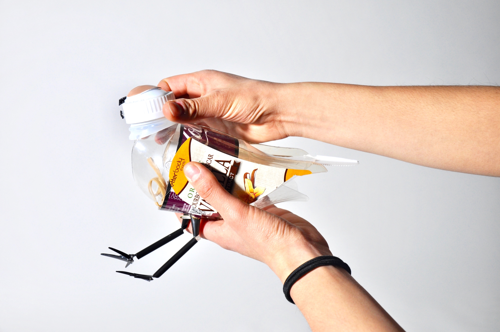
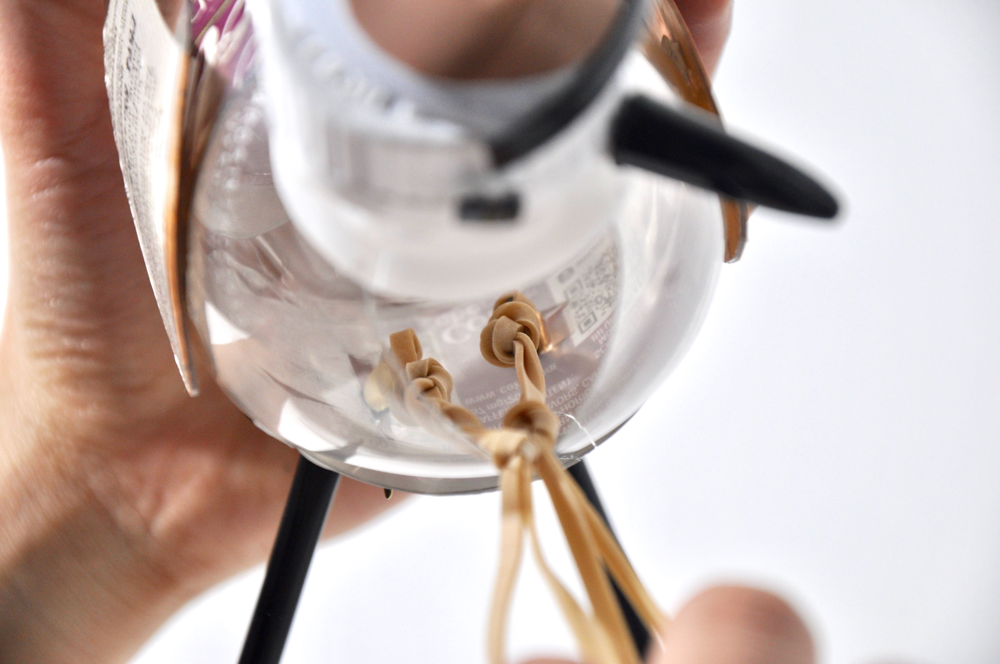
. . .
Animal Project: Part II (Poster)
Illustrator
—
Prompt:
Design a poster with the animal you previously chose. The poster must incorporate a tagline with the first letter of your animal's species, along with a short description. Both the description and the graphics in the poster itself should reflect reason(s) why your animal is endangered.
Process
1—research
I discovered that the Western Snowy Plover is endangered mostly because of habitat loss/interference from people and their pets, particularly during breeding season. The plovers are very fragile, and due to their size and metabolism, they have to be feeding almost all the time in order to maintain their energy levels. Therefore, if plovers are scared from their nests and/or chased, both the eggs and the parents suffer. In fact, if chased too long, the parents can actually die from exhaustion. There are some conservation efforts going on, but not a lot of awareness about why beaches are closed. I wanted this narrative to be apparent in my poster.
2—sketches
Thumbnails and studies.
3—paper-cut iteration
I picked this sketch to elaborate on, and made a paper-cut model to further play with the composition.
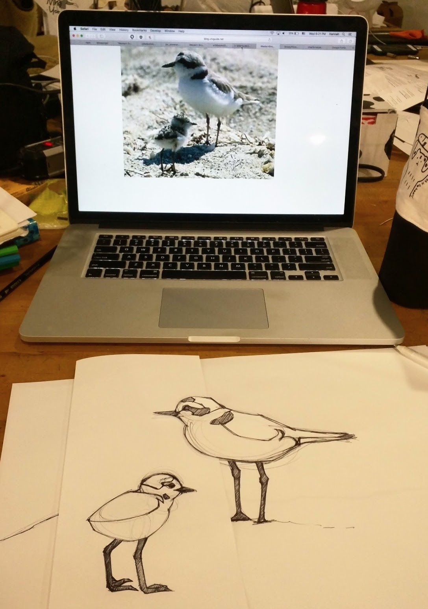
4—first iterations
5—second iterations; palettes
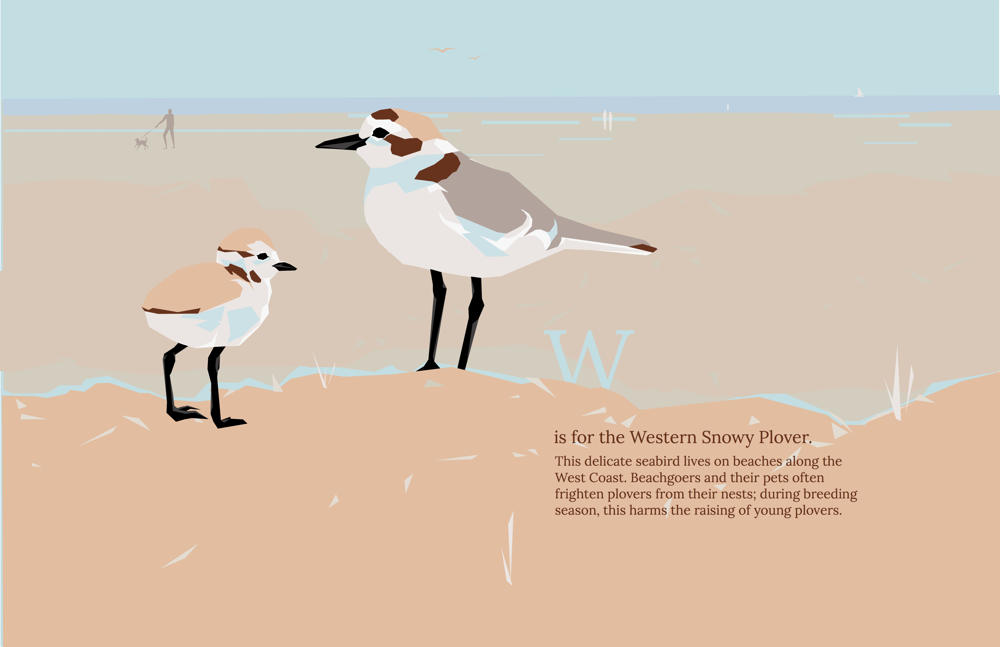
6—refinement
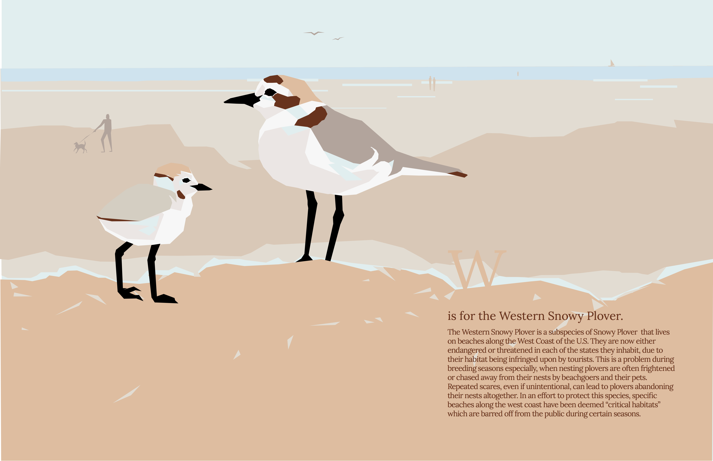
7—final
. . .
Animal Project: Part III (Pop-up)
cut paper
—
Prompt:
Create a pop-up card with the animal you previously chose. There must be at least one interactive aspect (such as a pull tab). Additionally, you may only use three colors and two shades of gray.

 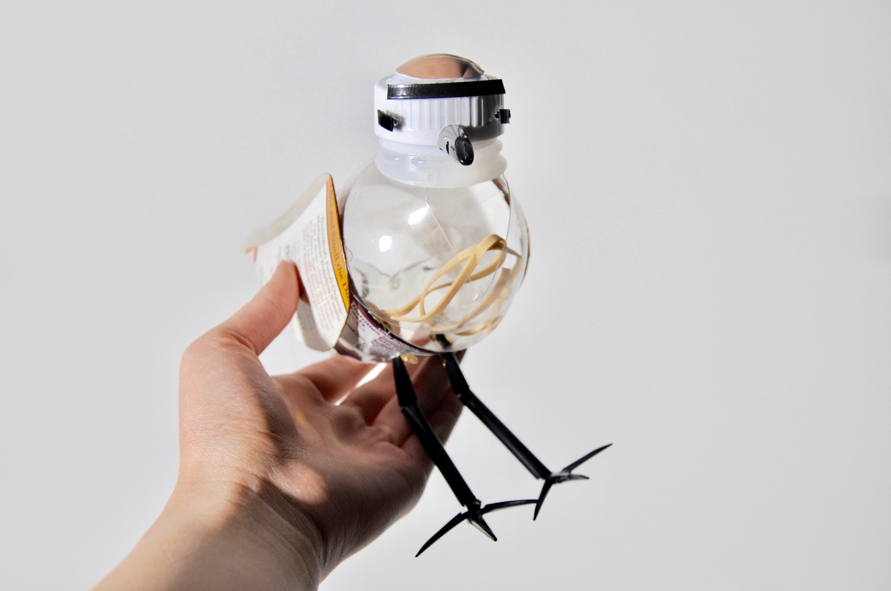
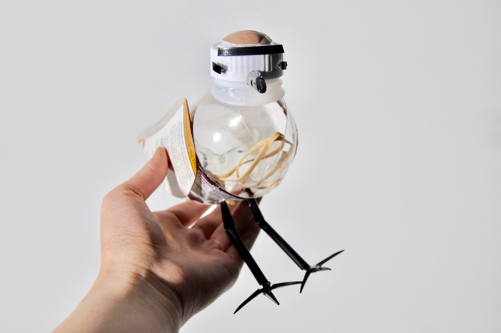


 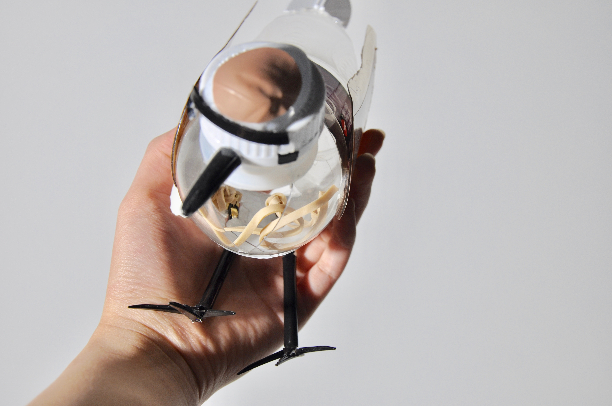
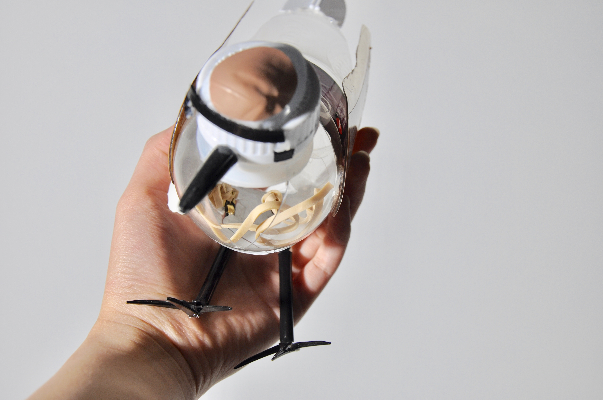


 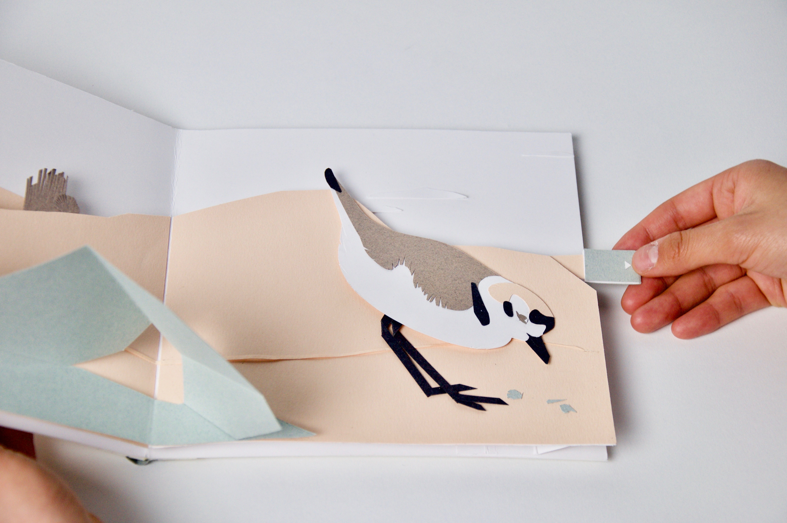
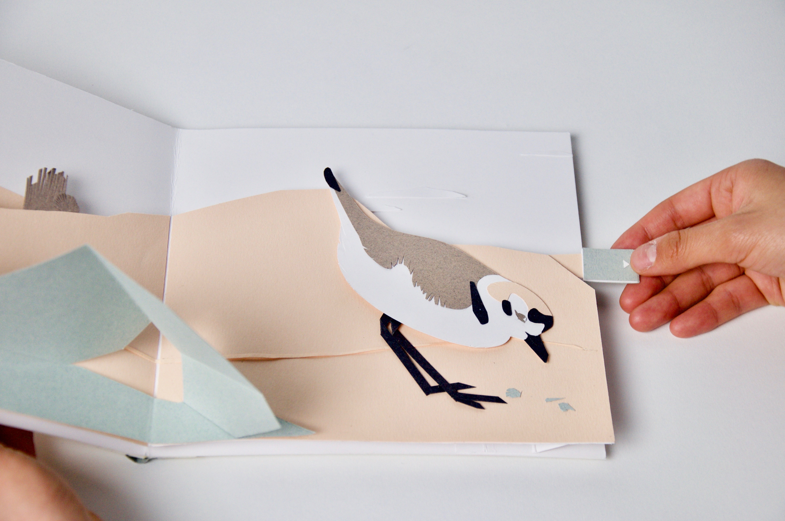
 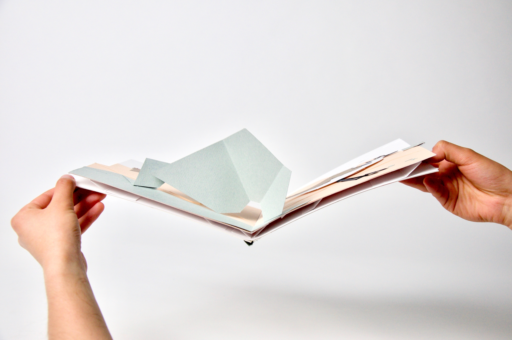
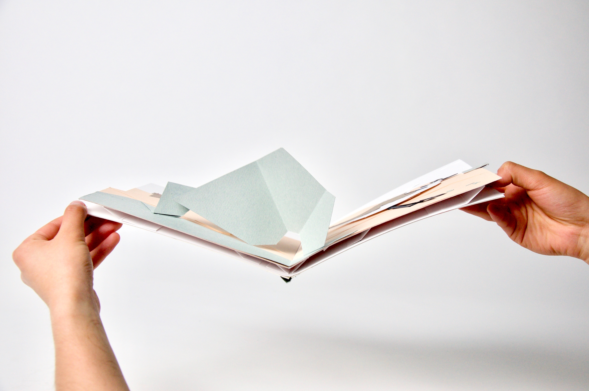